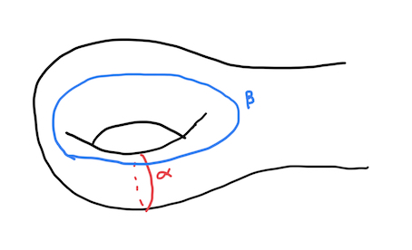
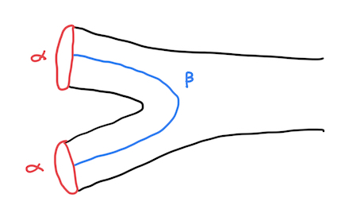

MAT1305 Lecture 1: Curves on surfaces
Table of Contents
1 Introducing curves on surfaces
Let us begin with a discussion of curves on surfaces.
Definition (Curve). Let \(\Sigma\) be an orientable compact surface possible with boundary. We define a curve on \(\Sigma\) as a map \(\alpha : S^1 \rightarrow \Sigma\). We call curve \(\alpha\) simple if it is non-trivial (that is, \(\alpha\) is not nullhomotopic), it is not free homotopic to a boundary component of the surface, and is injective.
Definition (Curve system). Let \(\Sigma\) be an orientable compact surface possibly with boundary. A curve system \(\Gamma\) of \(\Sigma\) is a collection of simple curves on \(\Sigma\) which are pairwise non-homotopic.
This definition allows for us to write down (yet another) definition of the genus of a surface.
Definition (Genus). Given a surface \(\Sigma\) (compact, orientable, possibly with boundary), we define the genus \(g(\Sigma)\) to be the maximum size of a non-separating curve system. That is, a curve system \(\Gamma\) such that \(\Sigma - \sqcup_{\gamma \in \Gamma} \gamma\) is connected.
With this, let us now recall a deep result which classifies all orientable, compact surfaces.
Theorem (Surface classification). Let \(\Sigma\) and \(\Sigma'\) be surfaces. Let \(b(\Pi)\) denote the number of boundary components of \(\Pi\) (the connected components of \(\partial \Pi\)). Then \(g(\Sigma) = g(\Sigma')\) and \(b(\Sigma) = b(\Sigma')\) if and only if \(\Sigma\) is homeomorphic to \(\Sigma'\). Moreover, given homeomorphic surfaces \(\Sigma\) and \(\Sigma'\), as well as a homeomorphism \(f : \partial\Sigma \rightarrow \partial \Sigma'\), there exists a homeomorphism \(F : \Sigma \rightarrow \Sigma'\) such that \(F|_{\partial \Sigma} = f\).
This a deep and fundamental result in algebraic topology. For a proof of this result, see my writings on algebraic topology (currently in progress), or Munkres' text.
Suppose are given a surface \(\Sigma\) of genus \(g = g(\Sigma)\) and boundary number \(b = b(\Sigma)\), let \(\Sigma_g\) be the connected sum of \(g\) tori, \(T^2 \ \# \ \cdots \ \# \ T^2\). Let \(\phi_1, \dots, \phi_b\) be maps \(\phi_k : B^2 \rightarrow \Sigma_g\) such that each \(\phi_k\) embeds the open ball \(B^2\) in \(\Sigma_g\) and \(\phi_j(B^2) \cap \phi_k(B^2) = \emptyset\) for \(j \neq k\). Let \(\Sigma_0 = \Sigma_g - (\phi_1(B^2) \sqcup \cdots \sqcup \phi_b(B^2))\). This is clearly a compact, orientable surface with boundary. It has genus \(g\) and \(b\) boundary components.
It follows from the classification theorem that \(\Sigma \simeq \Sigma_0\). Thus, when thinking about surface \(\Sigma\), it will often be helpful to instead, without loss of generality, consider \(\Sigma_0\), of which we can construct a nice mental picture.
Let us now return to understanding the behaviour of curve systems. Of course, a surface can have many curve systems, so a natural next question for us to ask is: how many such curve systems can we find on a surface, up to free homotopy? Take \(\Sigma_0\) as defined above. Without loss of generality, we can assume that there is a region of \(\Sigma_0\) which looks something like this, with simple curves \(\alpha\) and \(\beta\):

Our goal is to answer the following question: does there exist a homeomorphism which takes \(\alpha\) to \(\beta\)? As it turns out, the answer to this question is yes, and it follows directly from the surface classification theorem.
Theorem. Given a surface \(\Sigma\) of genus \(g \geq 1\) and curves \(\alpha\) and \(\beta\) of the form in the above diagram (existence of such curves up to homeomorphism is guaranteed by the fact that they exist in \(\Sigma_0\) constructed above), there exists an auto-homeomorphism of \(\Sigma\) which sends \(\alpha\) to \(\beta\).
Proof. Without loss of generality, we can assume \(\Sigma = \Sigma_0\). Consider the subsets of \(\Sigma_0\) given by
\begin{equation} \Sigma_{\alpha} = \Sigma_0 - \alpha = (T^2 - \alpha) \ \# \ \cdots \ \# \ T^2 - (\phi_1(B^2) \sqcup \cdots \sqcup \phi_b(B^2)) \end{equation}as well as
\begin{equation} \Sigma_{\beta} = \Sigma_0 - \beta = (T^2 - \beta) \ \# \ \cdots \ \# \ T^2 - (\phi_1(B^2) \sqcup \cdots \sqcup \phi_b(B^2)) \end{equation}where the embedded disks are assumed, without loss of generality, to be disjoint from the curves \(\alpha\) and \(\beta\). Clearly, \(T^2 - \alpha \simeq S^1 \times [0, 1]\), and with a bit more thought, it is easy to conclude that \(T^2 - \beta \simeq S^1 \times [0, 1]\) as well.

Thus, \(\Sigma_{\alpha} \simeq \Sigma_{\beta}\) (for elaboration on why this holds for spaces constructed via the connected sum, see Lecture 0).
We know from the classification of one-dimension manifolds that any one-dimensional compact manifold without boundary is a disjoint union of circles. Thus, since \(\partial \Sigma_{\alpha}\) and \(\partial \Sigma_{\beta}\) are compact manifolds without boundary, they will be a disjoint union of the same number of circles. It follows that we can choose a homeomorphism of \(\partial \Sigma_{\alpha}\) to \(\partial \Sigma_{\beta}\), sending the two boundary components produced by slicing \(\alpha\) to the two boundary components produced by slicing \(\beta\).
We then use the second part of the surface classification result to extend this to a homeomorphism \(\varphi\) from \(\Sigma_{\alpha}\) to \(\Sigma_{\beta}\), which also has this property of sending the \(\alpha\) -boundary to the \(\beta\) -boundary. We then re-construct the original surface \(\Sigma_0\) by taking the closures of \(\Sigma_{\alpha}\) and \(\Sigma_{\beta}\) in \(\Sigma_0\), both of which produce the whole space \(\Sigma_0\). The unique induced auto-homeomorphism on the closures, produced from \(\varphi\), will have the property that it sends \(\alpha\) to \(\beta\).
(J): This section may be subject to some changes. This proof doesn't really say anything about preserving orientation
2 Classifying all simple curves on a surface
Remark. The final result of the previous section suggests that we can classify the simple curves lying on \(\Sigma\). Given two curves \(\gamma\) and \(\xi\) on a surface, it follows from a similar argument to above that if \(\Sigma - \gamma\) and \(\Sigma - \xi\) produce surfaces of the same type, then the two curves are of the same homeomorphism class. Thus, a natural question for us to ask is: how many such homeomorphism classes of curves exist?
Corollary. Two curves \(\gamma\) and \(\xi\) on a surface \(\Sigma\) of type \((g, b)\) are of the same homeomorphism class if and only if \(\Sigma - \gamma\) and \(\Sigma - \xi\) are of the same type.
Proof. If \(\Sigma - \gamma\) and \(\Sigma - \xi\) are of the same type, the proof is the same as above. If \(\gamma\) and \(\xi\) are of the same homeomorphism class, then there exists homeomorphism \(\varphi : \Sigma \rightarrow \Sigma\) such that \(\varphi(\gamma) = \xi\). Then \(\varphi |_{\Sigma - \gamma} : \Sigma - \gamma \rightarrow \Sigma - \xi\) is a homeomorphism, so the surfaces are of the same type.
Theorem. All non-separating curves of a type- \((g, b)\) surface are in the same homeomorphism class.
Proof. Slicing along any simple curve \(\gamma\) will yield two new boundary components. ((J): This is intuitively true, but can we justify it better?) Since \(\gamma\) is non-separating, we can extend it to a maximal non-separating curve system ((J) Can we? This requires proof.), which will have size \(g\). Cutting \(\gamma\) leaves a size \(g - 1\) non-separating curve system for \(\Sigma - \gamma\). It is maximal because if it weren't, and we could add another curve \(\gamma'\) which is not pairwise homotopic with the other curves of the system, and cannot be slid to the boundary, then \(\gamma'\) cannot be homotopic with \(\gamma\) in \(\Sigma\), and we have a size \(g + 1\) non-separating curve system, a contradiction. Thus, the surface \(\Sigma - \gamma\) is always of type \((g - 1, b + 2)\).
Placing a simple curve \(\gamma\) on a surface \(\Sigma\) with genus \(g\), boundary number \(b\), and then removing \(\gamma\) to create \(\Sigma - \gamma\) will have one of two effects:
- It is non-separating, and will create a new surface with genus \(g - 1\) and boundary number \(b + 2\), so type \((g - 1, b + 2)\).
- It will separate the surface into two new surfaces of type \((g_1, b_1)\) and \((g_2, b_2)\) such that \(g_1 + g_2 = g\) and \(b_1 + b_2 = b + 2\).
We have reduced the problem of classifyinng all simple curves on a surface to classifying all separating simple curves on a surface.
(J): I still need to finish this part, I don't quite understand where we get that the number of all such homeomorphism classes is \(3g - 3 + b\) yet.
3 Generic curves on surfaces
Now, we broaden our perspective: let us consider curves that are possibly non-simple (i.e. they can wind around themselves many times/they are non-injective). Given two curves \(\alpha\) and \(\beta\) is surface \(\Sigma\), let \(i(\alpha, \beta)\) denote the geometric intersection number between the curves: the number of times the two curves share a common point on \(\Sigma\).
We begin with the simplest example: the torus.
Claim. The collection of all isotopy classes of closed curves in the torus are parameterized by \(\mathbb{Q} \cup \{\infty\}\).
Proof.